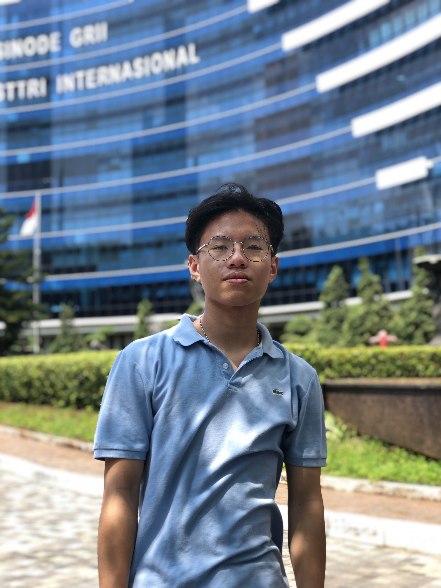

EMAN - Enchanted Multirole Airborne Navigation
Drone multirole canggih dilengkapi LIDAR dan sistem kontrol instant via iPad/Handphone. Sambungkan remote dan nikmati kendali penuh.
Tentang Kami
Kami adalah mahasiswa dari Calvin Institute of Technology, membentuk Team GMJ (Gabriel, Marcho, John).
Gabriel Marcho Panggey - Lead Engineer
Godwin Pasaribu - Arsitek Desain
John Valerian - Software Engineer
EMAN adalah solusi drone masa depan dengan kapabilitas navigasi udara multirole, otomatisasi penuh, dan integrasi kontrol modern melalui perangkat pintar, menjadikannya ideal untuk inspeksi, pemetaan, dan keamanan.
Fitur EMAN
Autonomous Navigation
EMAN dapat menavigasi dirinya secara otomatis dengan kecerdasan buatan.
Instant Mobile Control
Kendalikan drone hanya dengan iPad atau smartphone Anda.
LIDAR Integration
Dilengkapi dengan sistem LIDAR canggih untuk pemetaan lingkungan secara real-time.
Full Remote Override
Anda juga dapat mengambil alih kontrol penuh kapan saja dengan remote.
Multirole Adaptability
EMAN didesain untuk fleksibilitas dari inspeksi, pemetaan, hingga keamanan.
Sejarah dan Dokumentasi
Selama pengembangan EMAN, kami mendokumentasikan perjalanan kami dalam menciptakan inovasi ini.

Godwin Pasaribu
Age: 21
From: Jakarta
of Calvin Institute of Technology
"Kita Balas Semester depan"

Gabriel Marcho Panggey
Age: 19
From: Manado
Student of Calvin Institute of Technology
"Kita Balas Semester depan"

John Valerian
Age: 19
From: Jakarta
Student of Calvin Institute of Technology
"Kita Balas Semester depan"
Proyek ini dirancang dan dikembangkan selama beberapa bulan, melalui riset, eksperimen, dan kolaborasi intensif demi menciptakan platform drone yang efisien dan adaptif.